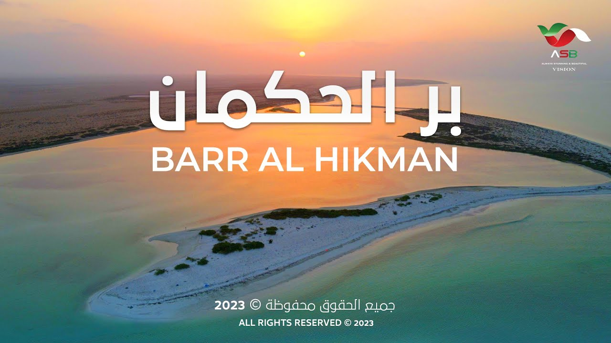

( مالديف عمان)
تحت السطح الأزرق السماوي لبحر العرب يكمن عالم يعج بالحياة.
يعد النظام البيئي البحري المزدهر في بر الحكمان ملاذاً لعشاق الحياة البحرية والمسافرين الفضوليين على حدٍ سواء.
يوفر الغطس والغوص في هذه المياه لمحة عن عالم نابض بالحياة تحت سطح الماء –
إنها سيمفونية من الألوان تتجلى من خلال الشعاب المرجانية ومدارس الأسماك وحتى السلاحف البحرية الجميلة التي تتغذى وتتكاثر في المنطقة
بسبب وفرة الغذاء من الرخويات والقشريات والطحالب والنباتات البحرية
جميع الحقوق محفوظه©